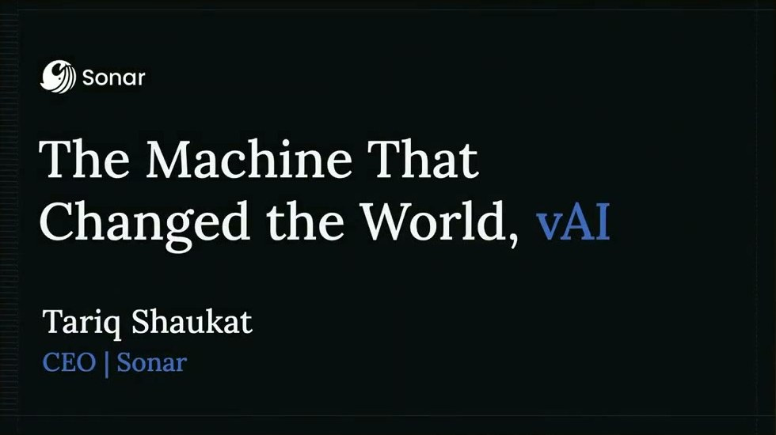

What software already borrowed from Toyota
In the 1980s, plenty of good cars rolled off assembly lines with uneven body panels and wide seam gaps because factories ran on a build-then-fix volume mindset. Lexus made the opposite case with a simple television commercial: a ball bearing rolling smoothly across hood seams that fit the first time, backed by a factory engineered around zero rework.
Shaukat lists five rules from that shift: put quality ahead of volume, fix systems rather than isolated symptoms, design parts so they can actually be manufactured together, solve defects where they happen instead of at the end, and let any worker stop the line. Modern software engineering absorbed all five under familiar names: Agile, Kanban, SRE error budgets, and continuous integration. Those habits worked well as long as humans wrote the code at human speed.

“First is you prioritize quality instead of volume. The second is that you fix the system, not just individual symptoms that you see.”00:00:06
- 1980s car plants chased volume and patched defects at the end; Toyota engineered quality into the line itself.
- Stopping the line early and fixing systemic causes became software's Agile, Kanban, error budgets, and CI.
- Those practices assumed code creation was the scarce, human-paced step.
Evidence: transcript 00:00:06 · watch the Toyota production opening
Code volume exploded, and teams want agentic factories next
Asynchronous coding agents broke that assumption. Citing a recent study on his slide (NBER Working Paper 35275), Shaukat points to a 2,450% surge in lines of code written and a 240% jump in commits after teams introduced async agents into development. With raw code cheap and abundant, enterprises are moving to automate the whole pipeline: in an early preview of Sonar's 2027 State of Code Developer Survey across 1,026 respondents, 5% report running agentic software factories today, rising to 34% within a year and 39% in financial services.
Abundance cuts both ways. The same capability that accelerates feature code also accelerates vulnerability discovery and exploit generation while critical CVEs climb. Shaukat cites an October 10, 2026 note by Satya Nadella (transcribed as "Sachin Adela") on model insider risk, arguing that enterprises need containment and governance grounded in deterministic system design, human controls, and reliable operating procedures.
“You have an explosion of the number of lines of code written of 2,450 percent.”00:02:53
- Async coding agents drove +2,450% more lines of code and +240% more commits in the cited NBER study.
- Surveyed adoption of agentic software factories is projected to jump from 5% today to 34% in a year (39% in finance).
- Rising exploit speed requires deterministic containment and governance built into the factory.
Evidence: transcript 00:02:53 · watch the code abundance & factory stats
Human review surrenders, and large codebases burn 30x tokens
When Shaukat asks enterprises about their AI governance plan, most still answer "human in the loop". The funnel chart on his slide shows where that stalls: +2,450% lines of code and +240% commits narrow to +170% pull requests and just +30% more releases. Worse than the queue is what Shaukat calls cognitive surrender: in a recent study, human reviewers agreed with AI when it was right 93% of the time, and agreed with AI when it was wrong four times out of five. Speeding up human sign-off does not fix a review step that waves 80% of bad output through.
Agents hit a second wall as repositories grow. On a code-translation benchmark shown on his slide, pass rates dropped from 91% on codebases under 10,000 lines to 67% between 10,000 and 50,000 lines, then collapsed to 15% past 50,000 lines. A separate study found a 30x variance in token spend across runs of the same task on complex repositories because agents burn context figuring out where to start, like trying to reach New York from White Plains (transcribed as "white planes") on one run and from Albuquerque on the next.
“they agree with AI when AI is right, 93 percent of the time, and four out of five times, they agree with it when the AI is wrong.”00:05:15
- A 2,450% jump in lines of code yielded only 30% more releases because review and confidence bottleneck delivery.
- Under cognitive surrender, humans accept incorrect AI output 80% of the time.
- Above 50,000 lines of code, translation pass rates fell to 15% and same-task token consumption varied by 30x.
Evidence: transcript 00:05:15 · watch cognitive surrender & codebase scaling
Multi-step errors compound, and LLM judges flip their verdicts
Long-running agent workflows add two statistical traps. First, step errors multiply. Shaukat points to METR's task-horizon chart (transcribed as "meter"), where an early Claude Mythos Preview (transcribed as "Cloud Windows Preview") completes tasks that take a human 16 hours, but only at a 50% success bar. Raise required accuracy to 80% and the horizon flattens sharply: even at 95% accuracy per step, compounding across 20 steps drops end-to-end accuracy to roughly 36%.
Second, asking another LLM to grade the output does not restore determinism. A PayPal AI Research paper cited on the slide (Kumar et al.) found that 7% to 17% of LLM judge verdicts flip across identical replications of the exact same prompt. A Meta study alongside it (Zhao et al.) showed that challenging the judge with a simple "are you sure?" flips 7% to 34% of verdicts depending on the model. With exploit windows shrinking toward zero, neither rubber-stamping humans nor reward-seeking LLM judges can serve as the sole gate.
“depending on the model and the situation, between seven and seventeen percent of verdicts change across what they call identical replications.”00:08:01
- At 95% per-step accuracy, a 20-step agent workflow succeeds only about 36% of the time.
- Standalone LLM judges change 7–17% of verdicts across identical runs and 7–34% when asked "are you sure?"
- Near-zero time to exploit forces defect prevention inside the build loop rather than post-ship response.
Evidence: transcript 00:08:01 · watch compounding errors & LLM judge variance
The multiplicative formula: intent, guide rails, verification, evidence
Sonar frames enterprise factory design as a product of four terms: Code Confidence = Intent × Guiderails × Verification × Evidence. Shaukat multiplies them deliberately: if intent is vague, if in-loop guidance is absent, if verification is skipped, or if audit proof is missing, that single zero wipes out confidence in the whole release.
He draws a sharp distinction between hard guardrails and "guide rails". Guardrails only catch a car leaving the highway; guide rails nudge an agent along the right lane inside the coding loop by supplying explicit standards and a structural map of the codebase. Giving agents that structural map and in-loop checking through Sonar Vortex cut token spend by 36% on large, long-running tasks and reduced issues in committed code by 92% before pull-request review even started.
“And we multiply these together because we've seen a number of situations where one of these elements is missing, and if it's zero, the confidence goes to zero.”00:10:56
- Confidence multiplies four pillars: clear intent, in-loop guide rails, independent verification, and auditable evidence.
- Missing any one pillar reduces enterprise shipping confidence to zero.
- Feeding structural maps and in-loop checks via Sonar Vortex cut token costs 36% and commit-time issues 92%.
Evidence: transcript 00:10:56 · watch the Code Confidence formula
Deterministic CPUs plus generative GPUs, backed by audit proof
Once code leaves the inner agent loop, independent verification has to match the check method to the defect class: run deterministic CPU analysis wherever exact rules exist, and reserve GPU generative checks for semantic judgment. On Shaukat's verification diagram, deterministic analysis owns syntax, dependency SCA, control and data flow, taint tracking, architecture, and secrets, while agentic verification checks intent alignment, business logic, emergent anomalies, and performance.
In Sonar's survey of more than 1,000 developers, teams pairing AI coding with SonarQube were 81% more likely than non-users to report a very positive impact on code security, 34% more likely on time to market, and 76% more likely on outage frequency. Every quality gate then records timestamped evidence of the intent, standards applied, checks executed, and pass/fail result to satisfy internal IT general controls, SOC 2, DORA, or automotive MISRA (transcribed as "Mister"). Code is abundant now; engineered, auditable confidence is the product a software factory actually has to ship.
“So we look at deterministic mixture of methods, and then you add in a generative mixture of methods, and it comes up with what we think is the gold standard of verification.”00:13:29
- Combine deterministic CPU static analysis (taint, data flow, SCA, secrets) with targeted GPU checks (intent, business logic).
- Surveyed SonarQube users were 81% more likely to report strong security gains and 76% on outage reduction.
- Timestamped quality-gate records turn verification runs into compliance evidence for SOC 2, ITGC, DORA, and MISRA.
Evidence: transcript 00:13:29 · watch hybrid verification & audit evidence